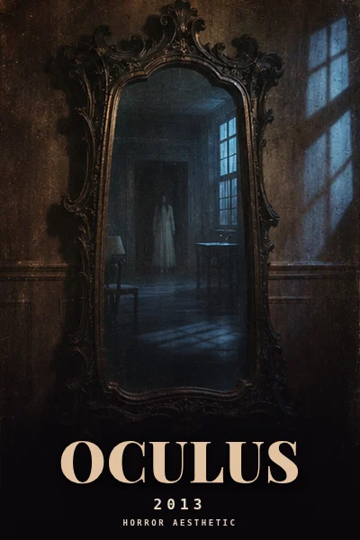

ОкулусOculus (2013)
Режиссёр: Майк Фланаган · Зеркала, Призраки, Двойные таймлайныDirector: Mike Flanagan · Mirrors, Ghosts, Dual timelines
Спустя одиннадцать лет брат и сестра возвращаются к старому зеркалу, которое разрушило их семью.Eleven years later a brother and sister return to the old mirror that destroyed their family.
Тим выходит из психиатрической клиники, где провёл одиннадцать лет, и сестра Кэйли сразу ведёт его к зеркалу, из-за которого погибли их родители. Она хочет доказать, что дело не в безумии, а в самом предмете.
Фланаган чередует два времени: детство героев и их нынешнюю попытку победить зеркало. Эти линии постепенно смешиваются, и мы перестаём понимать, что реально, а что нет. Именно в этой неразберихе и живёт страх.
Фильм умён и без лишней крови, он строится на идее ненадёжной памяти. В финале слишком много жестокости к героям, но она вытекает из логики истории.
Хороший выбор для тех, кто любит «Астрал» и «Мама»: фильм про дом, семью и вещи, которые нельзя трогать.
Tim leaves a psychiatric clinic after eleven years and his sister Kaylie immediately takes him to the mirror that killed their parents. She wants to prove it was not madness but the object itself.
Flanagan alternates two timelines: the heroes' childhood and their present attempt to defeat the mirror. The lines gradually mix, and we stop understanding what is real and what is not. That confusion is where the fear lives.
The film is clever and free of excess gore, built on the idea of unreliable memory. The ending is rather cruel to the characters, but it follows from the logic of the story.
A good pick for those who like Insidious and Mama: a film about a house, a family and things that must not be touched.